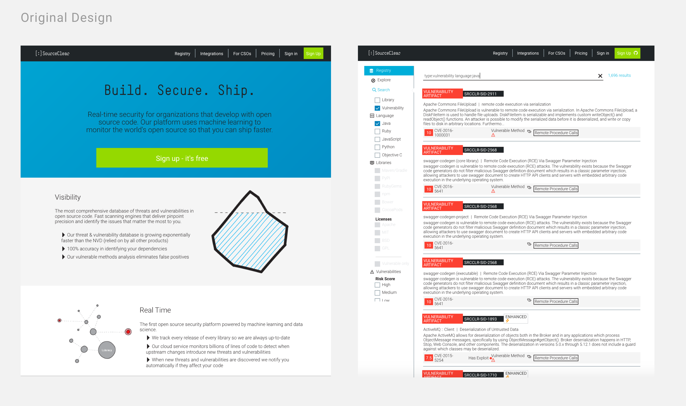
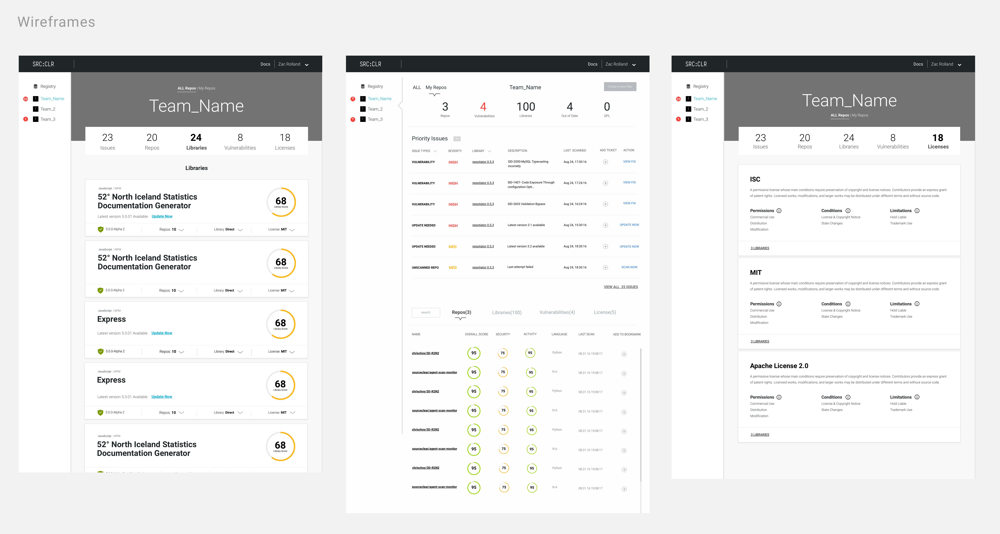
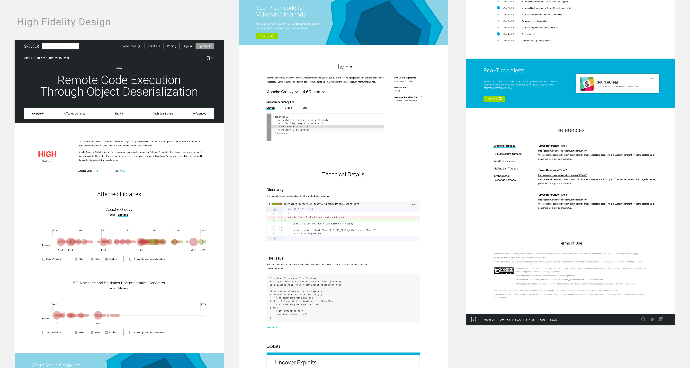

I went on an 8 month long Exploratory journey.
In the past eight months, I decided to take a break from school and went into the real world. I was lucky enough to have the opportunity to work at two design studios, Fantasy Interactive & Junior.io as a design apprentice. During my time there, I worked with multiple companies ranging from enterprises such as the weather channel and eBay, to start-ups such as clearspend, source clear and Brain. Due to NDA, I can't show everything I have done that hasn't been launched, yet I'd love to talk aout it in person.
The Weather Channel
While working with the weather channel, I was mainly tasked to design two parts. The cross-device portal of "Cold & Flu", and the Andoird Lite App where the Weather Channel aimed to design a lighter version targeting at companies with limited wi-fi access. In this project, I created the mobile,pad,desktop view of the cold & flue portion, and rapid-protoyped the Android lite App in 3 different languages with Invision.

Play with the prototype built
Take-Away:
Pay Attention to details, details, details.
Through my internship, I used motion design intensively for rapid prototyping because it was the only way to inform engineers both from U.S team and China team to keep updated with design solutions. Through conducting working prototype, I was able to speak more clearly about my design, so did my design become more credential. Also, it really really sped up the building process!!
Start-up: Source-Clear
Source clear is a start-up company that wants developers to rethink their approach to software security. In this project, we were tasked to simplify the user experience to make it easier for developers to keep track of and have a better understanding on the risk in their usage of different libraries. For this project, my focus was on redesigning and improving the UX of several pages. It was a quite challenging project as I was designing for developers, yet I was also able to learned so many things from working on this project.
  Take Away:
Forget you are a student, but also take advantage of it :)
Work environment is a lot harsher than school. Yep. You are often time questioned. Being confident is the first step to push yourself forward. So forget about you are a student, push back when you should. Yet take advantage of the fact of being student, ask questions shameless :)
Start-up: ClearSpend
ClearSpend is a start-up company that helps restaurant owners compare
Take Aways:
Be comfortable while facing ambiguity.
Working at small design studios or startups require fast decision making and often-time there's no specific researchers. I was often-time challenged and by keeping asking myself why, I make sure I follow my train of thoughts clearly and making the best decision as well as I could given the constraints.
And there's more....
During the 8 months, I explored my passion in human-centered design, strengthened my problem solving skills and committed my love for product design. Special thanks to Qianru, Rob, Janice, Pierre and many more talented folks who helped me unconditionally during this journey. Kinda missed school though.. So here comes my last take-away: